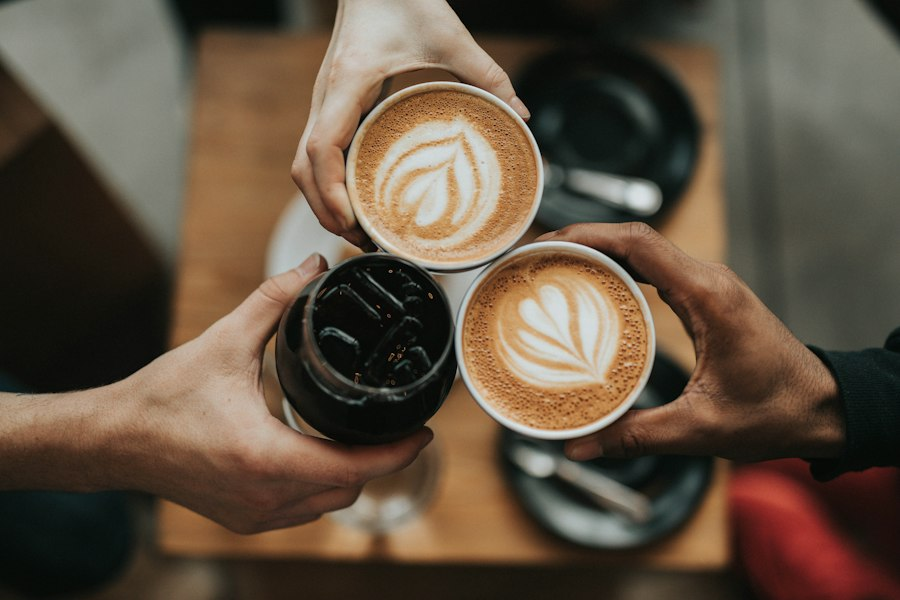
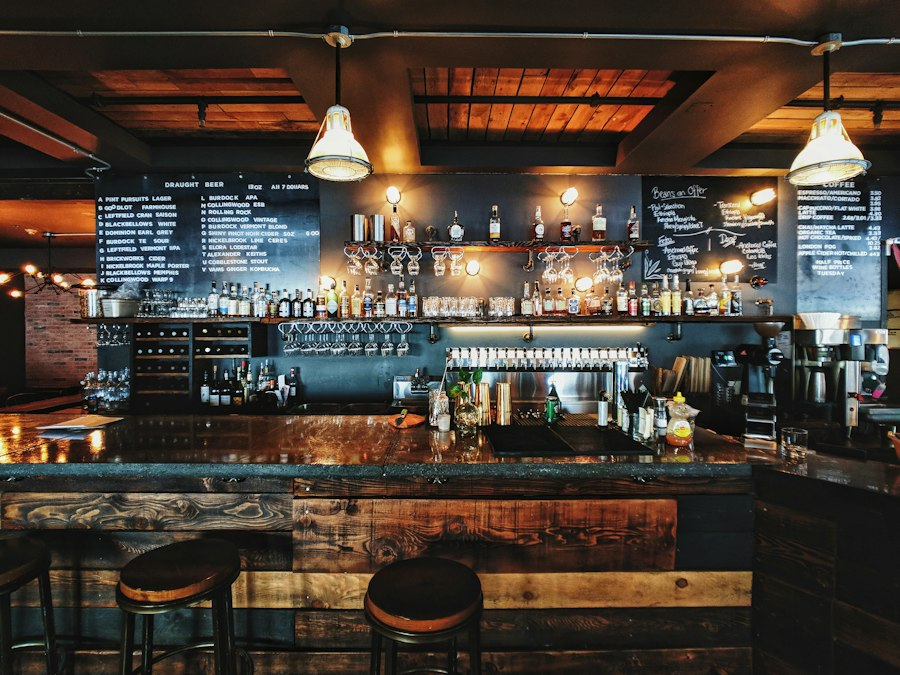

Desayuno
Calentado paisa, arepa de chócolo recién asada, chocolate con queso y café de fincas del norte antioqueño.
Desayuno, almuerzo y cena frente al parque principal de Yarumal. La carta cambia con la luz del día.
Abrimos con el primer tinto de la mañana y cerramos con la última copa. Cada franja tiene su propia carta, su propia luz y su propio ritmo.
Calentado paisa, arepa de chócolo recién asada, chocolate con queso y café de fincas del norte antioqueño.
Menú del día con sopa, principio y jugo natural. Platos de la casa para quien tiene tiempo de quedarse.
Carnes a la brasa, trucha de la región y coctelería con lulo, panela y aguardiente. Luz baja, mesas largas.
Yarumal es fría, y por eso aquí la cocina siempre está encendida. Madera, luz cálida y ventanales que miran a la plaza: se viene por el desayuno y uno termina quedándose a almorzar.




“Vine por un calentado a las ocho y me fui a las tres después del almuerzo. No me arrepiento de nada.”Mariana R. · Medellín
“La trucha al ajillo es la mejor que he probado en el norte. Y el cóctel de lulo con aguardiente, peligroso.”Andrés F. · Yarumal
“El menú del día sabe a casa, pero servido con cariño de restaurante. Vamos cada semana con la oficina.”Luisa G. · Santa Rosa de Osos